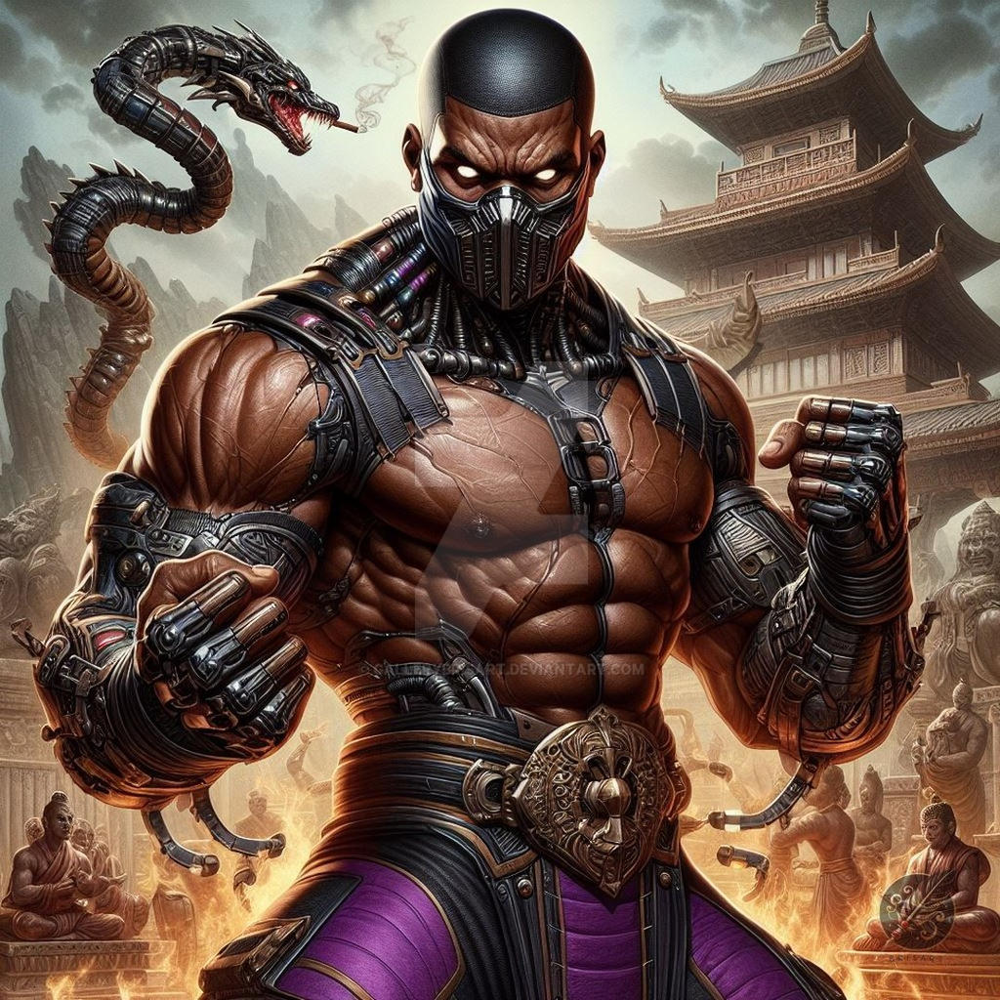
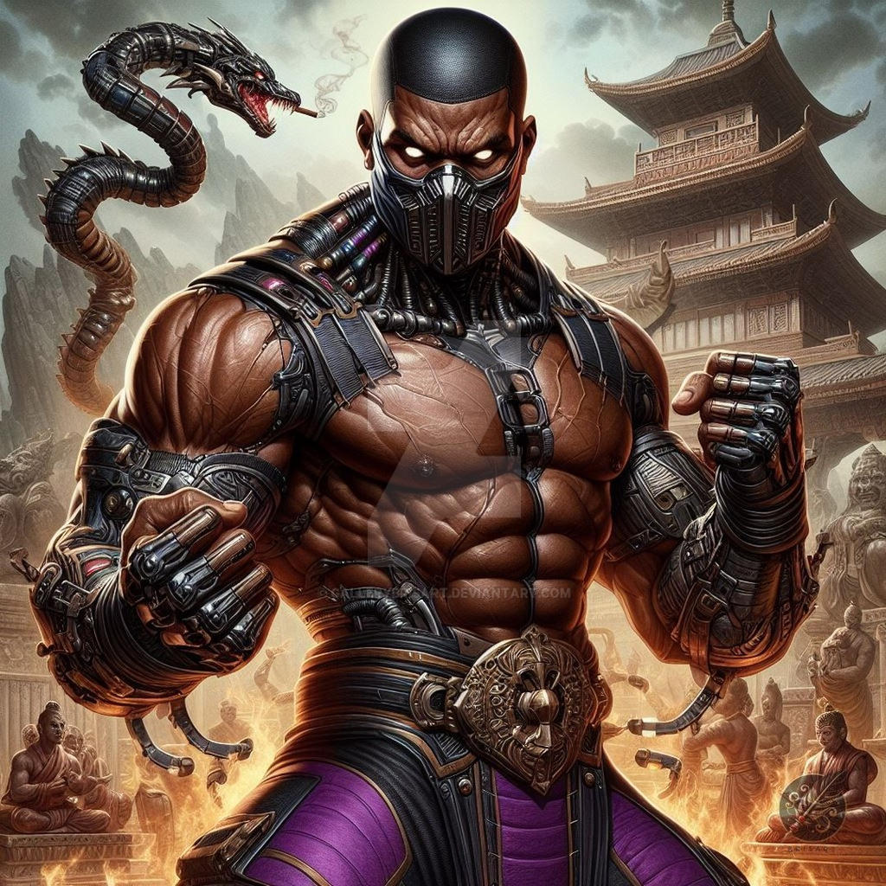
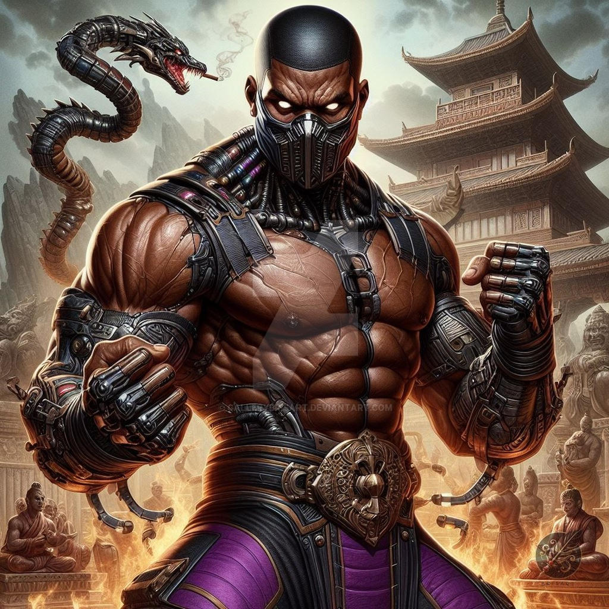

JAX - Mortal Kombat

Nome: Jackson "Jax" Briggs
Afilição: Forças Especiais dos Estados Unidos
Habilidades: Jax possui uma incrível força devido aos seus braços cibernéticos. Ele é um combatente excepcional no combate corpo a corpo e possui uma variedade de movimentos poderosos, incluindo golpes de impacto e ataques de agarramento.
Aparições: Jax fez sua primeira aparição em Mortal Kombat II e tem sido um personagem recorrente na série. Ele é um dos personagens mais icônicos e respeitados do universo Mortal Kombat.
Jax fez sua estreia em Mortal Kombat II. Ele é apresentado como um herói arquetípico afro-americano. Na cadeia de comando das Forças Especiais, ele é o superior direto de Sonya Blade e a força que catalisa a impulsividade de Sonya. Jax é claro, cuidadoso e sempre está vigiando o que seus homens fazem. Quando surge a necessidade, ele se torna uma besta no campo de batalha com a atitude e ferocidade de um leão. Ele faz uso sem escrúpulos da tecnologia mais avançada à sua disposição para melhorar tanto a si mesmo quanto sua unidade. Ele foi responsável pela desfiguração do criminoso Kano, obrigando-o a usar uma placa metálica sobre uma parte de seu rosto.
Na linha do tempo alternativa, Jax morreu às mãos de Sindel e foi revivido como um revenante por Quan Chi, a quem foi forçado a servir. Embora tenha sido finalmente libertado e trazido de volta à vida, suas experiências como revenante o deixaram traumatizado, reduzindo o feroz guerreiro a uma sombra quebrada de seu antigo ser. Algum tempo depois, ele se casou com uma mulher chamada Vera, com quem teve uma filha, Jacqui. Jax se opôs à ideia de que ela se juntasse às Forças Especiais, pois não queria que ela experimentasse os mesmos horrores e traumas que ele. Em Mortal Kombat 11, é revelado que sua esposa havia morrido, o que quebrou ainda mais Jax e o levou a se tornar um eremita. Isso deu à Kronika a oportunidade de recrutá-lo para seu objetivo de restaurar a linha do tempo, prometendo-lhe a capacidade de evitar que Jacqui se juntasse às Forças Especiais. Embora tenha inicialmente trabalhado ao lado de Kronika, foi convencido a retornar ao lado do bem por seu eu do passado, sua filha e Raiden, voltando-se contra sua aliada e se unindo à luta contra ela.
Na Nova Era, Jax começa como um agente do FBI que cofundou a Outer World Investigation Agency junto ao ex-Yakuza Kenshi Takahashi, depois de ajudá-lo a lutar contra os gângsteres na mesma noite em que Kenshi conheceu pela primeira vez Shang Tsung.
Jax é um soldado habilidoso e forte, conhecido por sua incrível força física. Ele consegue esmagar cabeças humanas com uma facilidade extrema e causar tremores no solo com um único soco. Sua força é suficiente para criar ondas de choque roxas e lançá-las contra os inimigos. Desde Mortal Kombat 3, Jax utiliza aprimoramentos cibernéticos que aumentam ainda mais sua força, incluindo mísseis portáteis, aprimoradores de energia, metalmorfose nanocinética e um mecanismo de pistão para aumentar a força de seus golpes.
Nos jogos posteriores, esses cibernéticos receberam novas melhorias, como socos propulsados por foguetes e disparos de projéteis de plasma. Jax também incorpora armamentos modernos em seu estilo de combate, como metralhadoras, granadas, lançadores de foguetes e RPGs, além de suas habilidades de combate corpo a corpo. Em Mortal Kombat 11, seus braços cibernéticos podem esquentar após cada soco, aumentando o dano e permitindo o lançamento de projéteis.
Além de suas habilidades de combate, Jax é um técnico, cientista e engenheiro competente. Ele foi responsável pelo desenvolvimento da tecnologia de portais usada pela Outworld Investigation Agency e pelo programa de aprimoramento cibernético do SF, além de restaurar a vontade própria de Cyrax após sua deserção da Lin Kuei.

O personagem Jax, de Mortal Kombat, é conhecido por seu visual marcante e suas roupas de combate, que passaram por várias mudanças ao longo da franquia. Aqui estão os principais trajes e estilos de roupa de Jax, focando nas versões mais conhecidas:
Traje Clássico (Mortal Kombat 2 - 1993):
Cor predominante: Azul.
Roupas: Jax usa uma camisa sem mangas azul, com um emblema no peito, que mostra um estilo militar. Ele também tem calças largas de combate e botas, além de luvas que cobrem seus antebraços e mãos.
Características adicionais: Uma espécie de bandana ou faixa na cabeça em algumas versões.
Acessórios: Luvas de combate, com destaque para os seus "braços cibernéticos" que, mais tarde, se tornariam parte importante de seu visual.
Versão Moderna (Mortal Kombat 9 - 2011):
Cor predominante: Azul e prata.
Roupas: Jax passa a usar uma camiseta de combate, combinada com calças táticas e botas robustas. Sua aparência agora é mais militar e focada em um visual mais prático e realista.
Braços cibernéticos: Jax adquire braços cibernéticos como parte de sua história, que são bastante imponentes e reforçam sua aparência de força bruta.
Mortal Kombat X (2015):
Cor predominante: Preto e dourado.
Roupas: Jax se veste com um estilo militar ainda mais futurista, usando um colete tático preto, calças com detalhes dourados e botas. Ele também possui seus braços cibernéticos, mais desenvolvidos, que possuem um design mais moderno e futurista.
Características adicionais: Uma bandana preta ou cinza amarrada na cabeça, além de ombreiras que dão um aspecto mais imponente.
Mortal Kombat 11 (2019):
Cor predominante: Preto, prata e detalhes em vermelho.
Roupas: Jax se apresenta com um traje militar mais técnico, ainda com colete e calças táticas. Seus braços cibernéticos têm um design mais estilizado, com detalhes em prata e elementos modernos.
Características adicionais: Ele também usa uma bandana e, em algumas variações, uma armadura mais reforçada nos ombros.


Use a fórmula F = m × a para calcular a força dos golpes do Jax!
Basta informar a massa do objeto (em kg) e a aceleração (em m/s²) do golpe.